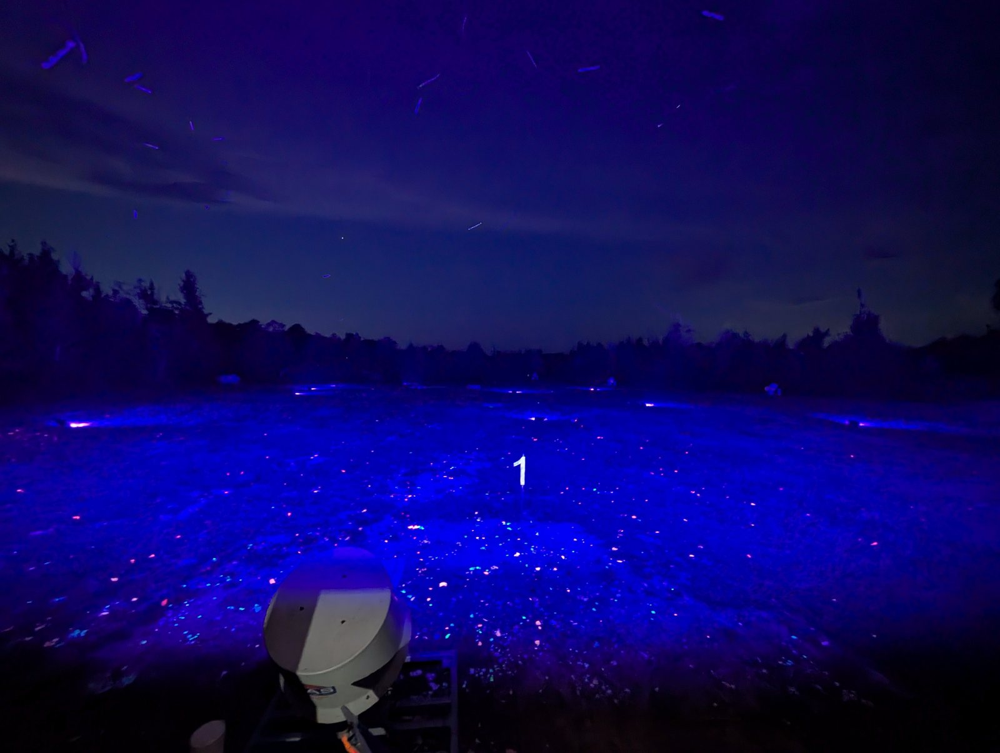
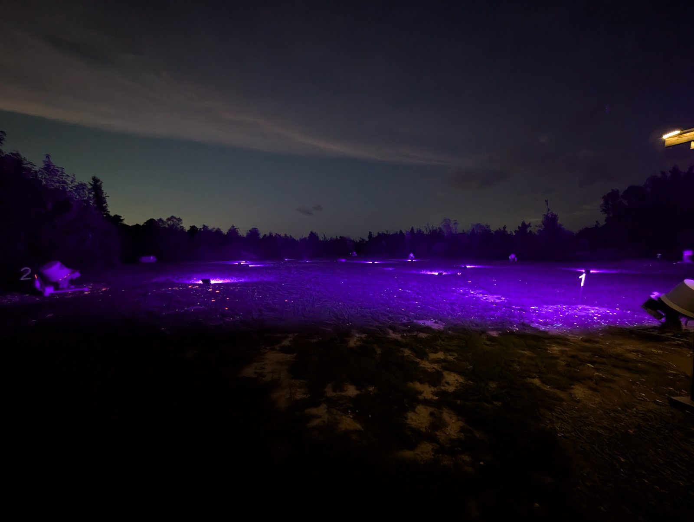

Glow in the darknight shoots
Clay targets that glow, stands lit up, and a field that looks nothing like it does at nine in the morning. Shooting starts when it gets dark.
What a night shoot is
The same clays, in the dark, glowing as they fly. You track a streak of light across a black field instead of an orange disc against a treeline — and it is a completely different problem to solve, even if you have shot here a hundred times in daylight.
How the night runs
- Shooting begins at dark, around 8:30.
- Round sales end at 10:30.
- Bring your own shotgun.
- Ammunition, snacks and cold drinks at the clubhouse.
- Eye and ear protection for everyone, watchers included.
Night shoots are scheduled events, not a standing weekly thing. Call (205) 821-4879 to find out when the next one is.
What it looks like


First night shoot?
Come a little before dark so you can see the ground you are walking on and get your bearings while there is still light.
Bring a flashlight or a headlamp for your gear and your shells. Everything takes longer when you are hunting for a box of shells in the dark.
Same rules, less light
Everything on the rules page applies exactly as it does in daylight — actions open off the stand, two shells maximum, muzzles up or down, eye and ear protection on.
If anything, be more deliberate than usual. Staff have final say on the stand, and on a night shoot they will stop things sooner rather than later.